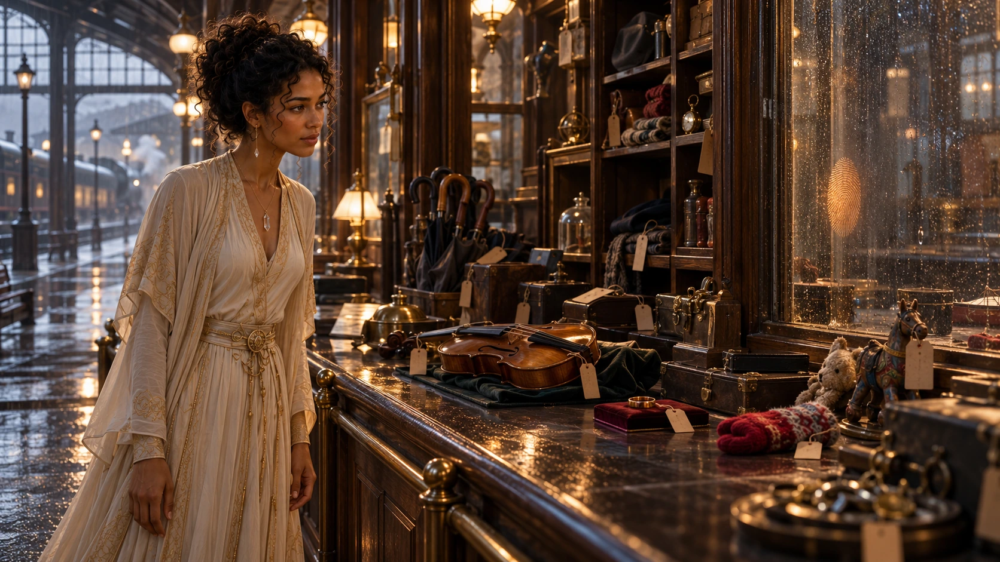
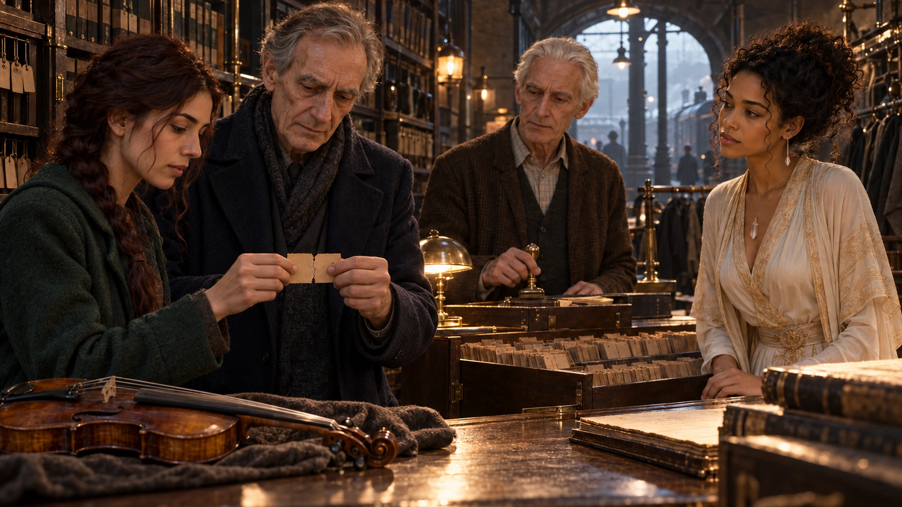
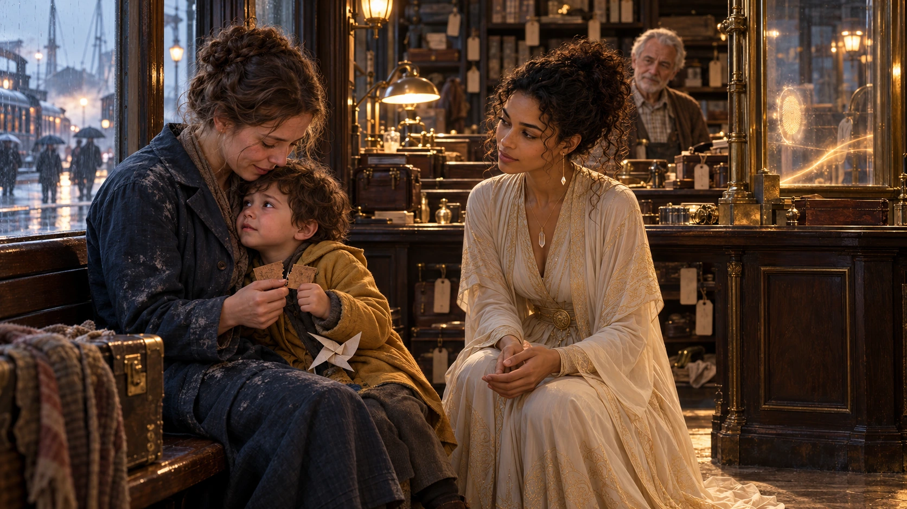

01 · Unclaimed Property
Harbour Central lost-and-found office · Tuesday, 04:52
The office had been built to hold forgotten umbrellas. By dawn it held a violin without a scratch, a wedding ring on a square of wet velvet, a red child's mitten the size of a plum, and four hundred other things that had arrived since midnight with nobody carrying them.
Illuminara walked the length of the counter without touching anything. Above the shelves the air was faintly warm, in the shape of the place on a doorknob where a hand has just let go. On the glass of the service window it had left a single oval thumbprint, still fading.

Teodor Pell, who had kept the office's ledgers for thirty-one years, stood behind the counter in yesterday's cardigan.
TeodorMrs. Marren's ring came back to her kitchen table at midnight. She threw it into the harbour. At two it was on her pillow. At four she carried it here in a sock and told me that if I did not stop my office, she would.
Wren Odira had come at his call. She carried a paper notebook, because Teodor did not allow screens near his ledgers, and she read from it without looking up.
WrenEleven houses so far. Nine are lost things going home. Two are not. Pavle Hadžić, nine, woke up holding his grandmother's sewing scissors. She had only set them down on the table to answer the phone.
IlluminaraSet down.
WrenYes. Not lost. Set down.
Not a search, Illuminara thought. A reflex.
Every object on the shelves wore a small oblong tag of brown card, tied on with thread and stamped with a number in a typeface she half recognised. No two numbers were alike, and she could find no order in them.
The door opened. Magistrate Ines Calloway, a tall woman with rain on her shoulders, laid a sealed order on the counter and kept one hand on it.
Ines CallowayAt nine this office closes and everything in it is sealed for the court. A three-year-old girl was sitting on Platform Two at 03:40, eleven kilometres from the farm where she fell asleep. She was cold and unhurt. Next time she may be neither.
IlluminaraI agree it must stop. If you seal the office, it will not stop. The warmth leans toward this wall, and past it, across the square, toward the hospital's patient-property cupboard. Close this room and you carry the problem to a place where people are even less able to refuse it.
Ines CallowayThen you have until nine to show me a better answer.
Wren wrote down the time. Teodor, who had loved the office longer than he had loved anyone, said nothing. His hand shook, so he laid it flat on the counter, as though to settle it.
02 · What It Understands
The same office · 05:40
Three owners were found and three objects chosen, because each had come to the office by a different road.
Ilse Marren's ring had gone into the harbour at her husband's funeral, on purpose, from her own hand. Ferenc Adler had owned his violin for fifty years, until he gave it to his student Dunja Roth; last week a fire in Dunja's flat had burned it black, and tonight it lay on the counter without a mark. The red mitten belonged to Marta Voss, who had lost it in a snowy park at the age of six and was now a baker with flour in her eyebrows.
Illuminara wrote a prediction on a card before anyone moved, folded it and gave it to Wren. She expected the visitor to follow the last hand that had held each object.
IlluminaraIf I am right, the ring goes to Mrs. Marren's house, the violin to Dunja and the mitten to Marta. If any of them goes elsewhere, I am wrong, and you will have it in my handwriting.
They set the three objects on the counter and cleared the room. Wren watched through the glass of the inner door, counting. At seventy-one seconds the warmth over the shelves stirred, and the counter was empty.
In the corridor, the ring was in Ilse's coat pocket and the mitten was in Marta's hand. The violin was in the arms of Ferenc Adler, who had not asked for it and held it like a man handed a debt.
IlluminaraWrong. It did not follow the last hand. It followed the first.
FerencI gave it to her. Before forty people. It is hers.
The warmth did not answer him. Dunja carried the violin back to the counter and left it there; eleven seconds later it was in Ferenc's arms again.
They tried what people try. Ferenc wrote a deed of gift and signed it, and the deed lay on the counter while the violin went home to him. Dunja laid a coin beside it as a price, and the coin went back to her pocket and the violin to Ferenc. Teodor, in disbelief, offered the empty air a receipt.
TeodorIt has returned my lunch to the bakery that sold it. I want that on record. My lunch was not lost.
Wren's mouth twitched. Marta Voss, still pressing her mitten against her cheek, laughed once, wetly. It was not unkind. The thing was so earnest.
DunjaIt is trying so hard to be good to him. And it is taking away the one thing I have left to play.
Illuminara watched the thumbprint cool on the window. I have been asking whether it understands who owns the violin. It may have no use for the word. What does it understand, that makes a gift look like a theft?
03 · A Century of Halves
Cloakroom archive, station basement · 06:37
She carried one of the brown tags downstairs and set it under Teodor's reading lamp.
IlluminaraEvery tag has a number, but I can find no list that holds them. Is there anything in this building that numbers things and keeps no names?
Teodor looked at the tag for a long time, and then at her, and then he took a brass key from his cardigan and opened a cabinet she had walked past twice.
Inside were ledgers, row on row, and in the ledgers, pressed flat, tens of thousands of half-tickets in the same typeface. For a century the station cloakroom had torn each ticket in two. One half was pinned to the coat; the other went home in the owner's pocket. The coat was finished only when the halves met.
TeodorForty-one thousand of them never came back. People lost the half. People died. We kept every stub, because the cloakroom's rule was that an unmatched half is still a promise.
WrenSame typeface. Same number series, continuing. It isn't counting what is lost. It is counting what is unmatched.
Illuminara felt the shape of it settle, the way a proof does when the missing line turns out to have been written on the margin all along.
IlluminaraIt grew up in this room. Everything it knows about owning, it learned from a counter where giving back and taking home are the same act, done with two halves of one ticket. It cannot read a name. It cannot weigh a price. It understands one sign of an ending: halves that meet.
DunjaAnd the violin, in my hands. Was that ever an ending to it?
IlluminaraNo. You held only the coat. You never held a half.
The cheapest test that could prove her wrong was also the cheapest to run. Teodor issued one fresh numbered pair from the old pad. Ferenc took one half and Dunja the other. They pressed their thumbs to the card, then brought the torn edges together until paper fibres met along the whole cut. Teodor marked the reunited pair GIVEN and laid both halves in the ledger drawer. The number alone was not the sign; the physical meeting of its two halves was.

The violin sat on the counter for ninety seconds, then ten minutes, then half an hour. On the service window a new thumbprint formed beside the old one and held, warm as a nod.
Ilse Marren, who had said nothing since the corridor, came to the counter.
IlseI will not put my name in a book. I put that ring in the harbour so that nobody would ever look at it again.
IlluminaraNo name. Teodor issues one numbered pair. You hold one half and the office holds the other as witness. To let the ring go, you bring the halves together and Teodor stores both under the number and the word RELEASED. If it takes the ring anyway, you have lost a morning and you may be as rude to me as you like.
At ten to eight Ilse walked to the end of Pier Nine with her half-ticket in one hand and the ring in the other. Teodor carried the office half on a small ledger board. Ilse touched the torn edge to its mate; when every paper fibre met, Teodor stamped the number RELEASED. Only then did she open her other hand over the water. The ring went down through the green light.
It did not come back. Ilse stood a long while with her empty palm. Her face did not look relieved; it looked like something being let go of.
04 · Nine O'Clock
East concourse, lost-and-found office · 09:00–09:50
Magistrate Calloway took the chair behind the counter. She read Illuminara's design standing up, one page of plain sentences, and then she read it a second time.
IlluminaraThree rules. Teodor issues one numbered pair for every act. To ask for a return, the holder keeps one half and the office keeps its mate apart as an open promise. To give or sell, the old and new holders meet the halves; Teodor stores the reunited pair marked GIVEN or SOLD. To let go, the holder meets one half with the other held by the office as witness; Teodor stores both marked RELEASED. Never a name. The court keeps every dispute. I do not ask the visitor to understand anything new. I ask it to keep doing what it already does, and to ask first.
Ines CallowayYou are proposing that the city regulate something it has never spoken to, by cloakroom ticket.
IlluminaraI am proposing we speak to it in the only language it has taught us. And I am proposing that it be allowed to say no.
She laid a torn ticket on the counter with the three rules written on the back, and beside it a second ticket left blank. If the visitor did not respond, she said, voluntary presentations would stop at nine-thirty. The office would remain open and exactly where it was. At the market and Platform Two, constables would issue guardian pairs to families with small children and have each pair's edges meet before anyone was set down, so a brief separation remained a completed relation. Court staff would mark a monitored perimeter, watch the hospital cupboard and handle no shelf, stub or object until the visitor answered or the court designed another non-moving test. The pause was the court's holding position, not a penalty for silence.
It was 09:02. The warmth over the counter drew taut.
A boy of four sat on the bench by the window, in a coat too thin for the morning, holding a paper windmill that had been in somebody's hand a moment before. He had been set down for two seconds in the morning market crowd, and the warmth had picked him up with the same patient courtesy it had shown the scissors.
He looked at the room, and began to wail.
TeodorOh, no. No, no, it's taking people as lost property.
Constable Aldo Brezar was already on the radio. Illuminara was kneeling in front of the bench with her hands open and empty. She did not touch the boy. She did not stop the warmth by force, though she could have; she thought of the hospital cupboard and let the thought go.
IlluminaraTeodor. Fetch his mother. Bring a ticket.
Lenka Vidmar came across the square at a run with flour on her sleeves from the fair stall. Teodor tore the ticket. She took one half; the boy, wailing, was given the other and curled his fist around it. Their thumbs met on the torn edge.
The warmth over the counter drew in on itself and released the route it had already opened. The boy remained on the bench where it had carried him, but now he leaned into his mother's knees and the warmth no longer held him as an unfinished return. He stopped crying in the middle of a breath.

Ines CallowayIt left him with her.
IlluminaraIt released a relation it had already moved. We have not yet proved that it will refrain from opening the next route.
The blank ticket on the counter had gone warm all along its torn edge. A thumbprint came up on the glass, slowly, then another beside it. Teodor said later that he had waited thirty-one years to see a visitor accept an invitation on a cardboard stub.
At 09:07 Wren began the prospective test. Teodor set his brass cloakroom key on the counter without opening a ticket or offering an office half. For two minutes—long past the earlier eleven and seventy-one seconds—the warmth leaned toward it, paused, and withdrew. The key remained exactly where he had set it.
Calloway took longer to speak than the room liked.
Ines CallowayThirty days. A public docket of numbers, never names. Any holder may refuse a ticket, and no object leaves a refusing holder without a court. And you will explain to me, on the record, what happens to the things it has already brought.
IlluminaraMost go home. Some will not. Mrs. Vuk's pawnshop holds a pocket watch the Rask family has wanted for twenty years. It was sold to her fairly. The visitor returned it to the Rasks this morning, and she has the right to refuse to join halves.
Mrs. Vuk, fetched from her shop in an apron, refused a transfer pair with the Rasks. She did accept a custody pair with Calloway's clerk: their edges met, the clerk marked the reunited halves DISPUTED, and the watch went into the court's safe to be heard on its own day. The warmth leaned toward the safe, held there longer than seventy-one seconds, and withdrew. The Rask daughter, who had held the watch for forty minutes that morning, wept in the corridor, and nobody told her that was only fair.
05 · Ask First
Harbour Central, lost-and-found office · 19:20
By evening the office had a new sign above the counter, lettered by Teodor in the old cloakroom hand. LOST AND FOUND. ASK FIRST.
Since 09:07 nothing had been taken. Eighty-three of the four hundred objects remained unresolved: eighty-two on the shelves, unclaimed or refused, and Mrs. Vuk's watch held separately in the court's safe. The rest had been matched with halves, one by one, or let go with a torn ticket and a quiet word at a pier. A queue ran down the concourse to the newsstand.
Marta Voss stood in it with her mitten in her pocket. She had come not to claim anything, but to leave a half-ticket for the mate she had lost in the same park, in case it was still anywhere to be found. A girl of seven in front of her left half of a ticket for a stuffed bear and said, with grave courtesy, to the empty air above the shelves:
GirlPlease, if it's not too much trouble. His name is Biscuit.
The warmth drew near, thought about it, and set a thumbprint on the glass beside her ticket. That was not a bear. It was a yes.
Illuminara stood by the inner door with Wren, watching the line shorten.
WrenYou could have stopped it by force, this morning. When the boy came.
IlluminaraYes. And then it would have been one more thing that decided without asking. I wanted it to see what asking is.
TeodorIt is not going to understand about the Rasks. Their watch. It is going to keep wanting to give it back.
IlluminaraIt may never understand. But it can be asked, and it can keep the invitation, and the court can carry what it cannot.
Behind the glass the oval thumbprint warmed and faded, warmed and faded, with the slow regularity of someone waiting. Illuminara did not press her own thumb to the window. She lifted her hand to the height of the print, nearly touching, and held it there.
It asked, she thought, and was answered. Now either of us may say no.